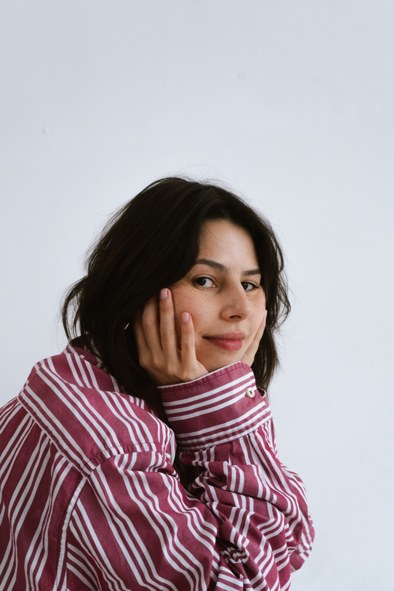
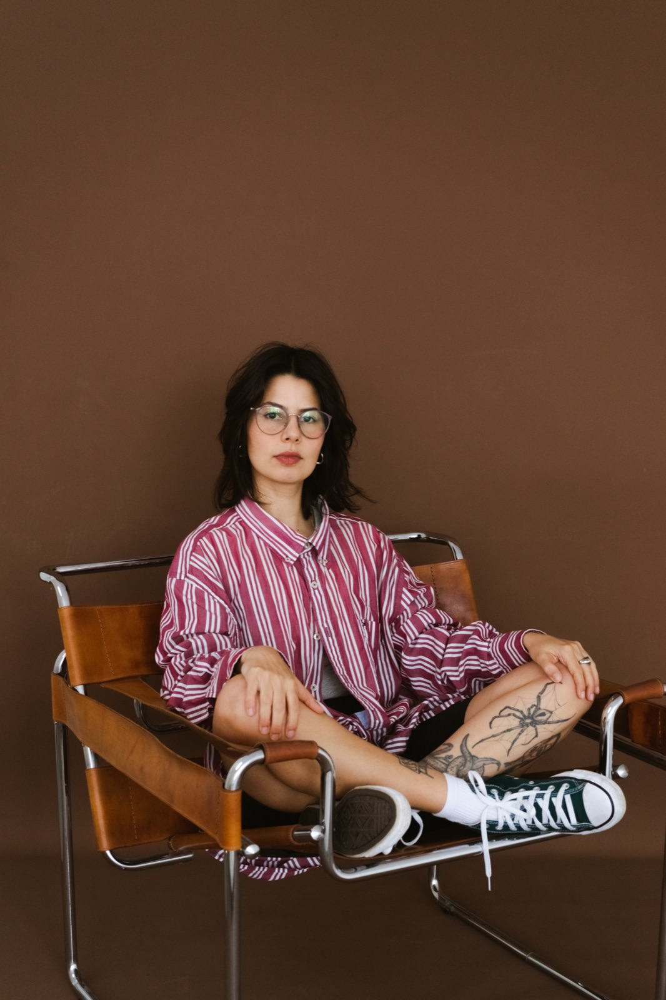
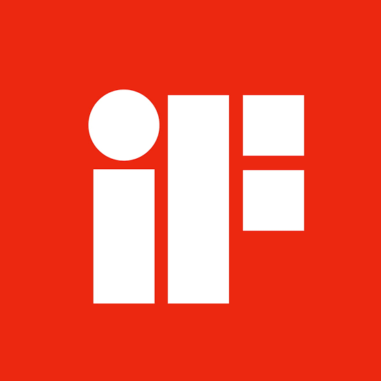

Senior Content Designer · LATAM based Designer de Conteúdo Sênior · Curitiba, BR
Brazilian Content Designer with 7 years of experience designing content for complex digital products. Content Designer Sênior com 7 anos de experiência projetando conteúdo para produtos digitais complexos.


Scaling content as an organizational capability Escalando conteúdo como capacidade organizacional
Read the case →Ler o caso → 02Reshaping a product around how people make decisions Reestruturando o site do festival a partir do modelo mental do usuário
Read the case →Ler o caso → 03Turning conversational data into product insight Transformando dados de conversa em insight de produto
Read the case →Ler o caso →
Winner in Mobile App and Desktop Website, for Caju's redesign project. Vencedora nas categorias Mobile App e Desktop Website, pelo projeto de redesign da Caju.
Caju's Redesign Project unified the Employee App and HR Portal to transition the product from corporate benefits to an integrated HR and Payroll platform. Built on research, testing, and a modular Design System, it delivers an intuitive, accessible, and authentic experience at scale. O redesign da Caju unificou o app do colaborador e o portal de RH para levar o produto de benefícios corporativos a uma plataforma integrada de RH e Folha de Pagamento. Construído sobre pesquisa, testes e um Design System modular, entrega uma experiência intuitiva, acessível e autêntica em escala.